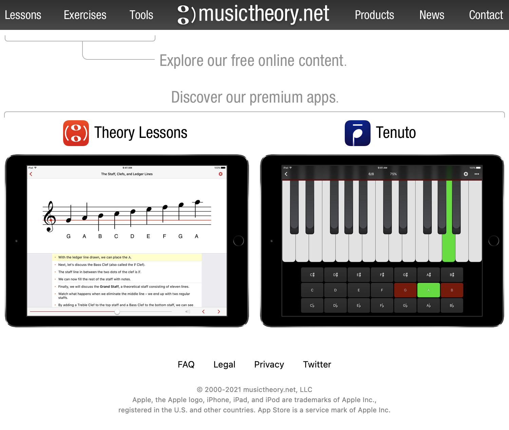

DH 110
Web Application for Learning Music Theory
About this Project
As we grow older, it becomes more difficult to find safe spaces where we can explore and develop our interests. For instance, learning a new instrument can be extremely daunting for older audiences as it is a skill that is usually developed earlier in life. The purpose of this project was to explore how to deign and develop an application for music learning that is friendly towards when in their middle ages. There are so many different aspects to consider while developing an application. However, various steps through this project explore different user demands and design opinions.
Design Statement
I hope to design a web application for music learning that is user friendly towards people of all backgrounds and skill levels. Tasks should be easy and intuitive to complete. However, users should also be granted the ability to interact with other musicians to gain a sense of community. This community can contribute to helping others learn and verify the credibility of the various lessons and exercises provided. The main question that I would like to answer is: How can I create a web application for learning music that is accessible to people of all skill levels while creating a sense of community?
Competitor Analysis
Heuristic Analysis
In order to begin the designing process, I analyzed two websites that achieved similar goals to those that I had in mind. These two websites are called musictheory.net and teoria.com. These websites were analyzed using a heuristics evaluation defined by Jakob Nielson. The heuristic evaluation is used to better understand what existing products do well and learn particular aspectss that do not work well. 
I chose to focus on using musictheory.net as a potential competitor since the way the interfact provided lessons and challeneges for its users matched the way I would teach music theory. The website is extremely simple and easy to use, which are two aspects of design that I would like to focus on my web application. However, the website could use some improvements that would assist users that are using the product. One aspect that I would add to the website would be a better recommendation system for lessons and exercises as choosing where to start could be very overwhelming from a first glance. In addition, if users could view their progress, it would help returning users pick up their learning where they left off. It would also help users feel a sense of progress and accomplishment in their learning, encouraging them to continue learning music theory.
See the complete heuristic evaluation here
Usability Testing Analysis
Usability testing is the process of testing a product or service through users representative of a population. Researchers will ask a participant to perform task and observe the participants behavior, reactions, and feedback to these tasks. The purpose of usability testing is to identify the problems in the design of the product, learn how to improve the product, and learn about the behaviors and preferences of those who may use the product. Usability testing suggests that the designs of UX designers should be influenced by how users interact with the design.
In order to further explore the functionality of musictheory.net, a usability test was conducted using a survey on google forms. The participant was asked to conduct tasks to confirm the issues found from the heuristic analysis.
- Navigation of the website from lessons, exercise, and tools was difficult. The poor visibility makes it difficult for users to know what page they're on.
- Users are forced to use recall rather than recognition as there is no progress indication present in lessons, exercises, and tools. Users need to use their memories to remember what lessom or exercise they left off of.
- The website lacks flexibility of efficiency of use. There are no multiple ways to navigate to a particular area of the website.
- Options are not clear for the user, suggesting poor reognition rather than recall. Information needed to use the product is not immediately visible.
The participant will be asked to conduct 3 different tasks to confirm the issues of the website listed above. I hope to improve the websites by adding more flexible and obvious ways to navigate the website so users could use it to its full potential. I hope that participants will be able to confirm my suspicions and also point out other flaws that I didn't consider before. Here are the three tasks listed below:
- Find a lesson about the introduction to chords and interact with the exercise. This tests to see if users can navigate the website and to see if users intuitively use their mouse or the arrow buttons at the bottom of the page to navigate the lesson.
- Find an exercise about chord identification from the current lesson. This is to test website navigation since there isn't a navigation bar provided from the current lesson.
- Customize the exercise and reveal the answer to the exercise. This is to test if the user could find certain options and test recognition rather than recall.
Overall, the UT process went smoothly but there were definitely areas of improvement. One thing I did not really expect was the overall ease that the participant had with using the website. Though there were some small hiccups that confirms some of the usability issues listed above, the candidate was able to navigate with ease. However, the participant is extremely knowledgeable with navigating websites, which may not be representative of the user base that we are seeking to understand (middle aged men).
See the complete usability testing here
User Research
To better understand user preferences and challenges while using the product, a contextual inquiry was conducted. I used participatory observation to learn how a person who normally learns music goes about exploring resources. I allowed the user to guide me through their process of how they would start learning music. I asked clarifying questions to better understand why they chose certain resources and what about them made them so enticing.
Through this activity, I learned a few main features users usually look for while using music learning resources:
- A comment section is important for users to verify the credibility of a resource.
- A visual aspect is important to learn music properly, whether it be watching or listening someone play.
- A sense of community is important for musicians
See the complete user research here
UX Storytelling
Personas and Usage Scenarios
'The needs and challenges a user feels can vary from person to person. In order to explore all of these different needs, 2 user personas were created to better understand our audience. Each persona is seeking to learn music theory for reasons that reflect what was learned in the User Research stage. Here are the personas:


These user personas help the designer see the website through the lense of the target audience. In addition, it helps the designer gauge whether or not they are achieving the design goal that they are seeking to implement.
See the complete user persona exploration here
Low Fidelity Prototyping
The purpose of creating a low fidelity prototype is to have a low-cost method to design and test the organization of a product. This is important because it allows for potential design problems to be uncovered and for users to voice their opinions before the final product is crafted. For this product a low-fidelity prototype was created with these goals in mind:
- Organize lessons in a way that is comprehensible and easy to people of all backgrounds to focus on what they want to learn.
- Present information in a credible manner so that users can help each other learn and verify the information presented in the video
- Create a platform where musicians can interact with one another and present opportunities for each other
After the low-fidelity prototype was created, I asked a participant to navigate through the wireflow and perform the following tasks:
- Find a lesson and complete it through its entirety
- Add a comment to a lesson and test discussion
- Find a chatroom that talks about opportunities to practice music with others
Overall, the testing went pretty smoothly. The user was able to navigate throughout the website with relative ease which was largely thanks to the tool bar at the top of the page. However, the user did point out some design flaws and questions that would have to be addressed in future iterations. For instance, though the user was able to find the chat rooms and thought navigating between different topics would be easy, they questioned why there should be a chatroom in the first place. They suggested making blog posts and focus on the discover portion (not wireframed) to encourage interaction between users. One problem with chat rooms is that opportunities and important messages can quickly be buried as more users interact. Another problem the tester pointed out was that it would be hard to continue older conversations or focus on a particular conversation while many people were talking. Utilizing blogposts with a specific topic would make things much cleaner and more organized while still fosering a community of users.
There were also a few other concerns such as how a new user would know where to start as presenting a sheer list of lessons could be overwhelming. The tester also suggesting color coding or organizing the website better as there could be a lot of information presented on a page that a wireframe couldn't be able to reflect.
See the complete low-fidelity prototyping here
Graphic Design Variations
An interactive prototype was created using figma. Once the wireframe is digitized, I readjusted the original design to fit a body font size of 16. Then the frames were readjusted to fit the scale of a standard 1440 x 900px Macbook Pro screen size. After all the information was fit to scale, the typography, shapes, and color schemes were chosen and applied to the website. Since, we are creating a website for learning, all of the choices tested on the prototype were inspired by this fact.
Once the variations in typography, font-family, etc were created. I asked a few participants to do an impression test of the choices. I recieved a lot of criticism about the color choices as they seemed too youthful for an older audience and distracted from the main purpose of learning music theory. All of the criticism also helepd me learned a lot about what needs to be considered while designing the rest of the website.
See the complete user-interfact design variations here
High Fidelity Prototyping
In this assignment, a high-fidelity, interactive prototype was created for a web app that enables people to learn music theory and connect with other musucians online. The purpose of this interactive prototype is to visualize the overall flow of the application, understand how user's make choices to navigate through the product, and better map out how the different functionalities of an application work with one another.


This high-fidelity prototype supports the following tasks:
User is able to engage in interactive lessons and exercises
One flow of action that the prototype illustrates is the user's ability to check out various lessons and exercises at their own convenience. First a user needs to select the "Lessons" or "Exercises" option in the top menu bar to view lessons or exercises respectively. The user can then search for a specific exercise or lesson and select it to enter into the interactive portion. Once the lesson is complete, they can check out other relevant lessons or exercises that are recommended to them.
User is able to interact with others through blog posts and comments
Another flow of action that the prototype supports is the user's ability to add comments or blog posts so that their fellow musicians can interact with them. To add a comment, the user must complete either a lesson or exercise. Then at the bottom of the page, the user can find the discussion section and add a comment. To view blog posts, a user simply needs to select the "Discover" option in the top menu bar. Then, they can explore various topics and popular blog posts and select the one they want to contribute to.
User is able to log in or create an account
The user is able to log in or create an account in order to save their progress on lessons and exercises. Throughout the various pages, the web application will indicate to a user whether or not they have completed a lesson or exercise and save their progress. Thus, an account is needed to save this data. From the top menu bar or the home page, the user is able to sign in or create an account.
View the interactive high-fidelity prototype here
See the complete high-fidelity prototyping here